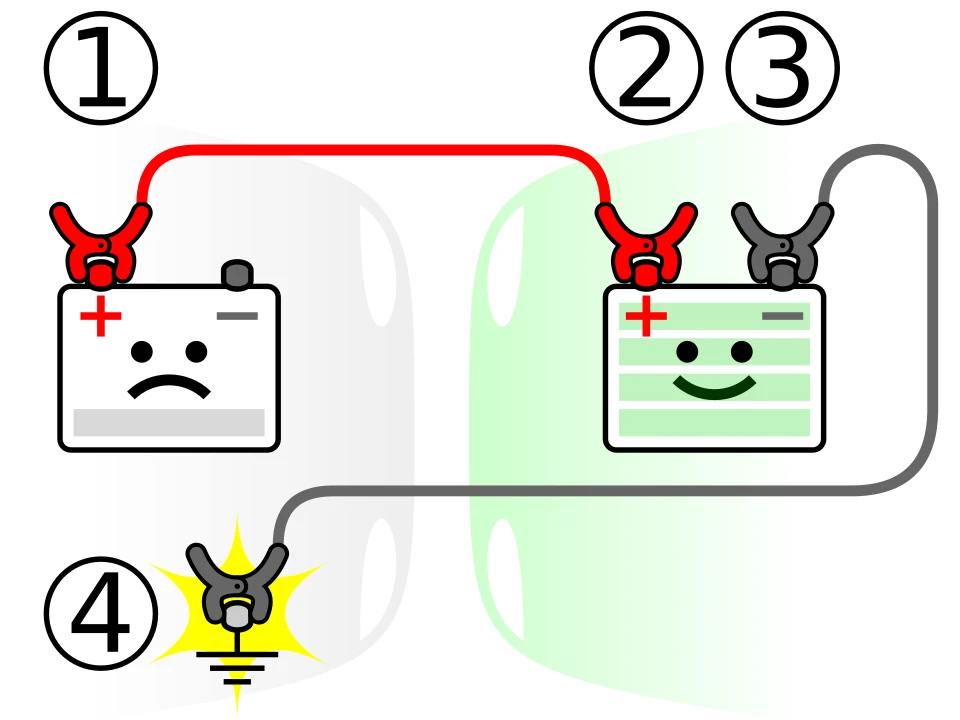

▲ 배터리는 더위에 더 빨리 늙지만, 증상은 기온이 떨어질 때 나타난다 ⓒ Wikimedia Commons
차량 점검은 보통 겨울 오기 전에 합니다.
그런데 손상은 이미 여름에 생겼습니다.
고온은 차에 가장 가혹한 조건입니다. 다만 증상이 바로 나오지 않을 뿐입니다. 지금이 확인하기 좋은 시점인 이유입니다.
1. 배터리 — 여름에 늙고 겨울에 멈춘다
배터리가 겨울에 방전된다는 인식이 있습니다. 맞는 말이지만, 원인이 겨울에 있는 것은 아닙니다.
📍 더위가 배터리를 망가뜨리는 방식
고온에서는 배터리 내부의 화학 반응 속도가 빨라집니다. 전해액이 증발하고 극판이 손상됩니다. 수명 자체가 줄어드는 것입니다.
다만 더울 때는 성능이 잘 나옵니다. 그래서 문제를 모르고 지나갑니다. 기온이 떨어지면 배터리 출력이 원래 낮아지는데, 여기에 여름에 줄어든 용량이 겹치면서 시동 불량으로 드러납니다.
| 항목 | 확인 방법 |
|---|---|
| 인디케이터 | 상단 점검창 — 초록이면 정상, 검정·흰색이면 이상 |
| 단자 상태 | 흰색·파란 가루(부식)가 끼어 있는지 |
| 사용 기간 | 통상 3~4년 — 그 이상이면 교체 검토 |
| 증상 | 시동 시 크랭킹이 느려짐 · 정차 중 헤드램프 밝기 변화 |
점프 스타터 사용법은 자동차 배터리 방전 시 점프 스타트 방법에서 정리했습니다.
2. 냉각수 — 여름 내내 최대 부하였다
냉각계는 여름에 가장 열심히 일합니다. 특히 정체 구간에서 에어컨을 켠 상태가 가장 가혹합니다.
| 항목 | 기준 |
|---|---|
| 양 | 보조 탱크 MIN~MAX 사이 |
| 색 | 탁하거나 갈색이면 교환 시기 |
| 누수 | 주차 자리에 초록·분홍 자국 |
| 호스 | 손으로 눌러 물렁하거나 갈라졌는지 |
⚠️ 안전 주의
· 엔진이 뜨거울 때 라디에이터 캡을 절대 열지 마세요
· 냉각계는 압력이 걸려 있어 끓는 냉각수가 분출할 수 있습니다
· 최소 1시간 이상 식힌 뒤 확인합니다

▲ 냉각수 호스가 물렁하거나 갈라졌는지 함께 확인한다 ⓒ Wikimedia Commons
3. 타이어 — 뜨거운 노면이 남긴 것
여름 아스팔트 표면은 한낮에 60도를 넘습니다. 이 위를 달린 타이어는 마모가 빨라지고 고무가 변합니다.
| 항목 | 기준 |
|---|---|
| 마모 | 트레드 1.6mm 마모 한계선 확인 |
| 편마모 | 안쪽·바깥쪽만 닳았다면 얼라인먼트 점검 |
| 측면 부풀음 | 허니아 — 발견 즉시 교체 대상 |
| 공기압 | 기온이 내려가면 자연히 낮아짐 — 재조정 필요 |
📍 기온이 떨어지면 공기압도 떨어집니다
기온이 10도 내려가면 공기압은 약 0.1bar 정도 낮아집니다. 여름에 맞춰둔 공기압은 가을·겨울에 부족해집니다. 계절이 바뀌면 반드시 다시 맞춰야 합니다.

▲ 측면이 부푼 허니아는 즉시 교체 대상이다 ⓒ Wikimedia Commons
4. 와이퍼와 에어컨 — 눈에 안 보이는 손상
| 항목 | 증상 | 조치 |
|---|---|---|
| 와이퍼 | 줄이 남거나 드르륵 소리 | 고무 경화 — 교체 |
| 에어컨 필터 | 바람 세기 저하 · 냄새 | 교체 (통상 1년 또는 1만km) |
| 증발기 | 퀴퀴한 냄새 | 곰팡이 — 세정 필요 |
✅ 에어컨 곰팡이 예방법
· 목적지 도착 3~5분 전에 A/C만 끄고 송풍은 유지합니다
· 증발기에 맺힌 물기를 말려서 곰팡이가 자랄 조건을 없앱니다
· 여름 내내 하지 않았다면 이미 냄새가 나고 있을 가능성이 큽니다
에어컨 냄새와 증발기 관리는 에어컨 곰팡이 냄새 원인과 해결에서 자세히 다뤘습니다.
5. 폭우를 지났다면 추가로 볼 것
올여름은 집중호우도 함께 지났습니다. 침수까지 가지 않았더라도 확인할 항목이 있습니다.
| 부위 | 확인 내용 |
|---|---|
| 전조등·후미등 | 내부 결로(김서림) — 실링 불량 신호 |
| 하부 | 진흙·이물질 잔류 — 부식 원인 |
| 실내 카펫 | 눌러서 물기가 배어나오는지 |
| 브레이크 | 물웅덩이 통과 후 제동 이질감이 남았는지 |
세 번째 항목이 특히 중요합니다. 카펫 아래에 물이 남아 있으면 곰팡이와 전장 부품 부식으로 이어집니다. 냄새가 나기 시작하면 이미 진행된 상태입니다.

▲ 여름을 지난 배터리는 첫 추위에서 문제를 드러낸다 ⓒ Wikimedia Commons
6. 정리
폭염은 차에 손상을 남기지만 증상은 늦게 나타납니다. 배터리는 고온에서 수명이 줄고 추워질 때 시동 불량으로 드러납니다.
냉각수는 여름 내내 최대 부하를 받았고, 타이어는 뜨거운 노면에서 마모가 빨라졌습니다. 와이퍼 고무는 자외선에 굳고, 에어컨 증발기에는 곰팡이가 남습니다.
기온이 떨어지면 타이어 공기압도 함께 떨어집니다. 계절이 바뀌는 지금이 다시 맞출 시점입니다. 폭우를 지났다면 등화류 결로와 실내 카펫 물기도 함께 확인하세요.